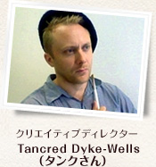
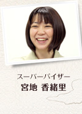
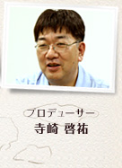

それではまず、タンクさんが所属していらっしゃるKuju Entertainmentについてお教えください。

Kujuは1998年にゲーム開発の会社として創立されました。アメリカ、イギリス、そしてヨーロッパ本土にオフィスがあります。イギリスにはdouble six、Zoë Mode、Headstrong Games というブランドネームを名乗っている開発スタジオがあって、スタジオごとに得意としているジャンルのゲームを開発しています。

タンクさんのデスクがあるHeadstrong Gamesは元々Kuju Londonと呼ばれていて、任天堂とのお付き合いはゲームキューブ用ソフトの『突撃!!ファミコンウォーズ』、Wii用ソフトの『突撃!!ファミコンウォーズ VS』に続き、今回のニンテンドーDSiウェア『わりと本格的 絵心教室 前期・後期』とニンテンドーDS用ソフト『絵心教室ＤＳ』で4作になります。
これまでとはまったく違うタイプのソフトですよね。

Headstrongでは、基本的にミリタリーやホラー系のアクションゲームを中心に開発してきましたので、今回のソフトはスタジオの開発ペースをがらりと変えてしまうようなものでした。
ある日の晩に突然「DSで絵のトレーニングをする『ゲーム』があったらどうだろう？ タッチペンで下画面に絵を描いて、上画面はチュートリアルにして……」というアイデアが浮かんできたんです。英語で「a bolt from the blue（青天のへきれき）」という慣用句がありますが、本当にきれいな青空から稲妻が落ちてきたような、「これだ！」という感じでした。
しかし、基になるアイデアはほんの数分でまとまったとはいえ、任天堂からすぐにOKをもらえたわけではありません。最初にご提案させていただいたときは、寺崎さんから「絵の素人である私でも30分で楽しく、満足感が得られるような絵が描けるようにしてほしい」という課題が出されたんです。

そのときは絵を描くなんてイヤでイヤでしょうがなかったんですよ（笑）。私みたいに絵が苦手な人間が2時間も3時間も絵を描く集中力はないし、せいぜい30分で描いて満足できるようなものができないと、商品の価値はないよ、ということは伝えました。

目指すべきものがよくわかりましたし、そうおっしゃって、なるほどと思いましたね。だから、プロトタイプができて、任天堂に提出した後に「課題をクリアできているね」との連絡いただいたときはとてもうれしかったです！

そういえば、なぜリンゴをモチーフに選んだの？

実はリンゴって、丸くて誰でもすぐにうまく描ける典型的なモチーフなんですよ。

それでうまく描けたのか（笑）。でも本当にわりと簡単に描けてしまったので、このポテンシャルは是非実現しようということで本格的にDSiウェア版の開発が始まりました。
タンクさんは絵の勉強などもされてきたんですか？

いわゆる絵の勉強としては、基礎コースに1年間いて、その後は学術的な方に進んだんですが、絵の講義を受けたり、自分で絵を描くことは続けていました。元々は彫刻が多かったんですが、子供ができてからは自分の作品を作るということは少なくなりましたね。
他のスタッフも、やはり絵画を専門に勉強されて？

そもそもHeadstrongはアーティスト出身が多いんですが、今回のプロジェクトでは特に伝統的な絵画をバックグラウンドに持っているメンバーが選ばれています。また、絵を描くだけでなく、ゲームの構成やレッスンの流れ、テキストなども担当する必要があるので、「何かを教えた」経験も考慮に入れています。
その反面、絵については初心者であるメンバーの意見も取り入れています。それによってアーティストの中では常識だったり、大して説明しなくても通じるようなことが、実際にゲームをプレイする初心者にとっては難しいということがわかったんですね。
今回の開発で、あらためて実際の絵画にふれたりもしたのでしょうか？

今まで絵に興味のなかったメンバーは実際に画材を購入したそうで、実際に絵具や水を混ぜ合わせてみたら「このゲームは本当にリアルだ」と言ってもらえて、うれしかったです。絵が専門だったメンバーにとっては、むしろどのようにして教えるか、ということの勉強になりましたね。